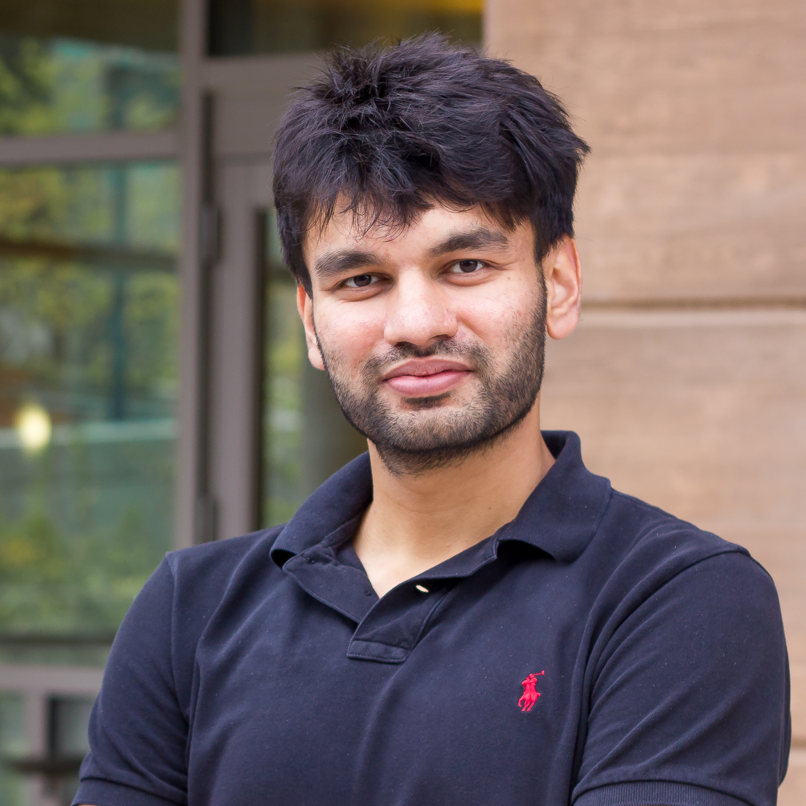
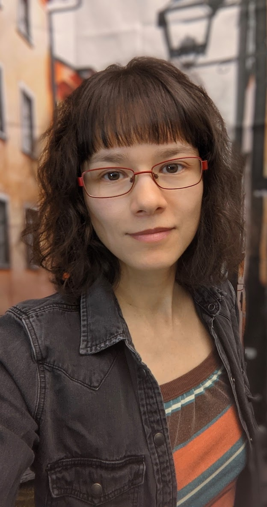
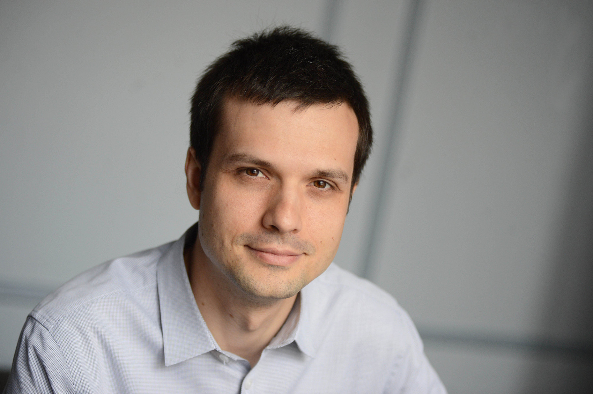

Introduction
Multi-fingered robotic hands promise versatile manipulation in human environments, from tool use and food preparation to cloth handling and knot tying. Recent advances in artificial intelligence, robust teleoperation, tactile sensing, and large-scale datasets are bringing us closer to overcoming long-standing challenges and realizing new levels of dexterity.
Yet major gaps remain: multi-fingered hands often underperform compared to two-fingered grippers; datasets and benchmarks remain gripper-centric; and grippers already dominate industrial use. This raises a critical question: how can we overcome these limitations and unlock the full potential of dexterous hands?
This workshop will bring together researchers from academia and industry to explore answers, with themes spanning manipulation bottlenecks, algorithmic advances, improved adaptability, and future directions. Through invited talks, spotlight presentations, posters, and a panel discussion, participants will exchange perspectives and build collaborations that drive progress toward practical dexterous manipulation.
Invited Speakers





(listed alphabetically)
Workshop Schedule
| Time (Vienna local time) | Event |
|---|---|
| 09:00 - 09:25 | Pulkit Agrawal |
| 09:25 - 09:50 | Rika Antonova |
| 09:50 - 10:15 | Jie Song |
| 10:15 - 10:30 |
Spotlight (3 min each) Ruka-v2: Tendon Driven Open-Source Dexterous Hand with Wrist and Abduction for Robot Learning HANDFUL: Sequential Grasp-Conditioned Dexterous Manipulation with Resource Awareness CoorGrasp: Coordinated Contact Control for Adaptive Dexterous Grasping Under Uncertainty Dex4D: Task-Agnostic Point Track Policy for Sim-to-Real Dexterous Manipulation DexDrummer: In-Hand, Contact-Rich, and Long-Horizon Dexterous Robot Drumming Industry Spotlight: Allonic |
| 10:30 - 11:15 | Coffee & Poster |
| 11:15 - 11:40 | Georgia Chalvatzaki |
| 11:40 - 12:25 | Panel Discussion 1 |
| 12:25 - 13:30 | Lunch Break |
| 13:30 - 13:55 | Robert Katzschmann |
| 13:55 - 14:20 | Jeannette Bohg |
| 14:20 - 14:45 | Maria Bauza Villalonga |
| 14:45 - 15:10 | Nathan Lepora |
| 15:10 - 15:25 |
Spotlight (3 min each) SimToolReal: An Object-Centric Policy for Zero-Shot Dexterous Tool Use A uSkin Fingertip with a Tactile Fingernail for Contact-Rich Dexterous Manipulation Multifingered force-aware control for humanoid robots Beyond Binary: Sim-to-Real Dexterous Manipulation with Physics-Aware Contact Representation Industry Spotlight: WUJI Hand Industry Spotlight: Sharpa Hand |
| 15:25 - 16:10 | Coffee & Poster |
| 16:10 - 16:35 | Matei Ciocarlie |
| 16:35 - 17:20 | Panel Discussion 2 |
| 17:20 - 17:30 | Closing & Award |
Call for Papers and Demos
In this workshop, our goal is to bring together researchers from diverse fields of robotics—including control, optimization, learning, planning, sensing, and hardware.
Each accepted short paper will be eligible for a poster presentation, and selected papers will be invited to give a short spotlight talk. Note: Both poster and spotlight presentations must be given in person.
We are particularly excited to provide a platform for showcasing real-world robotic systems. Even without a formal paper submission, we highly encourage you to submit videos demonstrating your robots in action. For those attending in person, there will be dedicated opportunities to showcase your robots live at the workshop!
We encourage researchers to submit work addressing the following themes, with a special focus on questions that could define the next breakthroughs in the field (this list is not exhaustive):
- Synergy of Learning, Planning, and Control
- What is the right balance? Should we continue advancing model-free learning, or do we need hybrid approaches that integrate control-theoretic methods?
- Can we expect a universal foundation policy for daily dexterous manipulation, or will each task require specialized policies?
- How can we scale up planning and optimization methods to high-DoF systems, and leverage them alongside learning to get the best of both worlds?
- How do we efficiently scale reinforcement learning pipelines across hundreds of tasks without manual intervention?
- Data, Simulation, and Real-World Transfer
- How can we better model complex hand-object contacts and speed up simulation for contact-rich tasks?
- How do we standardize the collection of human hand data in the wild to train robust robotic policies?
- How can we develop low-cost, easy-to-use teleoperation systems to gather large-scale demonstration data?
- How can we make policies robust when training demonstrations are scarce or biased?
- Perception: Seeing & Feeling the World
- Policy generalization: How do we ensure robustness across varying lighting conditions, cluttered environments, and unseen objects?
- What is the true role of tactile sensing: is it as powerful as vision in manipulation, or primarily a complement?
- What types of tactile sensors are necessary, and how can we use tactile data most efficiently for control and policy learning?
- Hardware: Redesigning Dexterous Hands
- Smarter, not just stronger: What innovations can make robotic hands more compact, efficient, and capable while remaining low cost?
- Durability & maintenance: How can we improve hardware robustness while reducing upkeep costs?
- What specific benefits do soft hands or novel compliant mechanisms bring to simplifying manipulation?
- Dynamic and Forceful Manipulation
- How can learning-based policies and control systems handle dynamic tasks that require high-frequency control?
- How do we build robust policies that adapt to forceful, high-speed physical interactions?
- How can we make high-DoF dexterous hands safely compliant during these interactions?
- Any additional related topics not already covered in the above list 😄
Submission Guidelines
- Submission Portal for Papers and Demos: OpenReview
- Paper Submission Guidelines:
- Double-Blind Review: The review process is strictly double-blind. Please ensure your submission is fully anonymized. Do not include author names, affiliations, or identifying acknowledgements in the main paper, appendix, or supplementary materials.
- Paper Length: Submissions should be up to 4 pages, excluding references, acknowledgements, and appendices.
- Format:
- Please follow the standard ICRA 2026 main conference format. Include references and appendices in the same PDF as the main paper, and submit any optional videos as a zip file in the supplementary material section.
- Dual Submissions:
- We welcome papers that are currently in preparation or under review at other major venues (including the ICRA 2026 main conference).
- Previously published works are also permitted, provided their publication status is explicitly stated at the time of submission.
- Demo Submission Guidelines:
- Summary Document: Please upload a summary document as a PDF. There are no strict page limit or formatting requirements for this document.
- Demo Video: Please upload video demos as a single zip file under the supplementary material field in OpenReview.
- Visibility: Submissions and reviews will remain private. Only accepted papers will be made public.
Timeline
- Submission Port Open:
March 1, 2026 - Submission Deadline:
April 10, 2026 (AOE) - Notification:
May 10, 2026 (AOE) - Workshop Date: June 1, 2026
Accepted Papers
- SimToolReal: An Object-Centric Policy for Zero-Shot Dexterous Tool Use
- Beyond Binary: Sim-to-Real Dexterous Manipulation with Physics-Aware Contact Representation
- Helping Hand: Completing Collaborative Tasks with Dexterous Hands
- Multifingered force-aware control for humanoid robots
- DexDrummer: In-Hand, Contact-Rich, and Long-Horizon Dexterous Robot Drumming
- CoorGrasp: Coordinated Contact Control for Adaptive Dexterous Grasping Under Uncertainty
- HANDFUL: Sequential Grasp-Conditioned Dexterous Manipulation with Resource Awareness
- Tracing Energy Flow: Learning Tactile-based Grasping Force Control to Reduce Slippage in Dynamic Object Interaction
- Towards Dexterous Agri-Food Manipulation: Topology-Dependent Interaction Patterns in a Reconfigurable Multifingered Gripper
- Ruka-v2: Tendon Driven Open-Source Dexterous Hand with Wrist and Abduction for Robot Learning
- Dex4D: Task-Agnostic Point Track Policy for Sim-to-Real Dexterous Manipulation
- TactileLab: Efficient Shear-Sensitive Tactile Simulation for Sim-to-Real Multi-Finger Dexterous Manipulation
- IFG: Internet-Scale Guidance for Functional Grasping Generation
- Dexterous Non-prehensile Manipulation using Environment Guided Diffusion Models
- DexNinja: Learning Robust Dexterous Cutting Policy with a Real-to-Sim-to-Real Data Engine
- A uSkin Fingertip with a Tactile Fingernail for Contact-Rich Dexterous Manipulation
- Robust Teleoperation of an Anthropomorphic Robotic Hand through Gesture Classification and Continuous Mapping